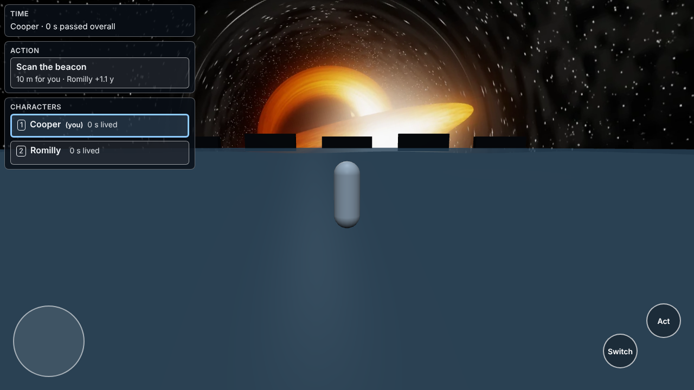
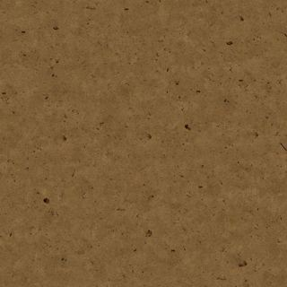
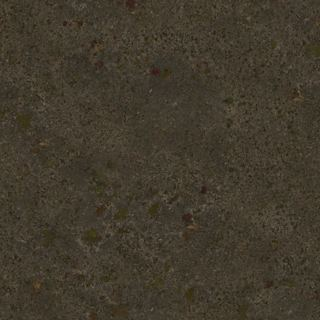
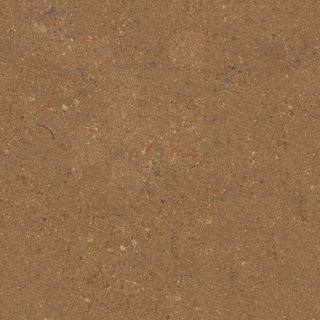
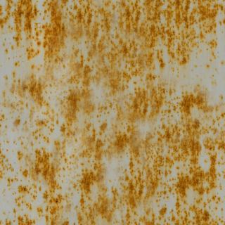
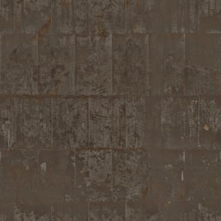
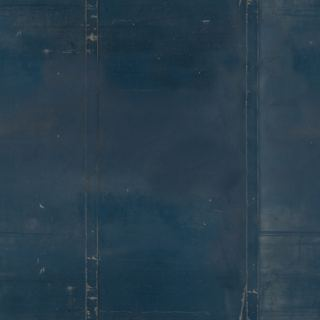
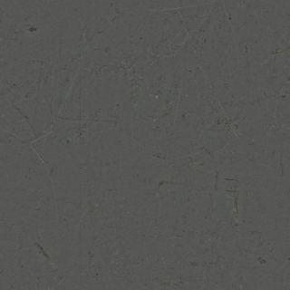

ART-001 · ART_DIRECTION.md · creator review pending (D-24)
Mood board: cinematic realism
Believable light, air, water and scale, framed like the film, inside a browser budget. Simple shapes, but lit, fogged and framed properly. Every visual should make the player feel where they are and what time is costing. This is an unofficial, non-commercial fan project (D-21); nothing here is film material.
1. Palette
Desaturated and natural. Strong colour is kept for warnings and for Gargantua's disk.
#03040aBlack space; Gargantua is the light
#1f3342Cold blue-grey, slightly emissive
#080a0dNear-black silhouette on the glow
#e0841aGargantua's disk, warm
#fff1d6Approaching side, Doppler boosted
#ccccc2Scuffed off-white
#e68c1fCopper band; others get their own
#2a2c30Dark grey, cramped
#ffb347Cockpit readouts, warnings
#c9ccd0Off-white, a little worn
#ffbf66Warm practical light
2. Lighting rules
- One key light per scene. On Miller there is no sun: the key is Gargantua's disk, low in the sky, warm and soft. A dim, cool fill comes from the sky. A very dim cool light from the camera side keeps faces of suits from becoming silhouettes.
- Haze on every exterior. Near things crisp, the horizon soft; scale is read through haze.
- Wet things look wet. The water is nearly mirror-dark with a faint glow; the seabed shows through it at the knee.
- Colour discipline. Cold exterior, warm practicals inside, amber for warnings. Never colour alone for information (NFR-04).
- Low, wide camera on Miller. The horizon and the sky dominate; people are small.
3. In-engine lighting test (Miller)
From the production build: the baked Gargantua sky (GARG-001) and the night palette, with the placeholder capsule still in place. The suited figure arrives with CHAR-001.

high tier4. Shot list
| # | Beat | Frame | Light and mood |
|---|---|---|---|
| S1 | B1 Descent | First person, cockpit window full of Gargantua, instruments in the lower third | Amber readouts on dark grey, the disk lighting the dashboard edge |
| S2 | B2 Landing | Third person, wide and low: the Ranger standing in water, the horizon a thin line | Warm low key from the disk, cold sky fill; stillness |
| S3 | B3 to B4 Beacon | Cooper small in the frame, the beacon on a short mast, the water to his knees | Disk glow behind the mast, spray at the shins |
| S4 | B5 Wreck | The half-submerged lander, Brand and Doyle at its hull | Rust and weathered plating, rim light from the sky |
| S5 | B7 The wave | Wide: a dark band rising along the horizon, Gargantua's glow rimming its top | Near-black silhouette, the sky brighter than the water for the first time |
| S6 | B8 Endurance, years later | Ring corridor, tally marks on a panel, a plant that has grown | Warm lamps, a cold window with Gargantua in it |
| S7 | B9 Decision | Romilly at the window, seen from behind | His silhouette against the disk |
| S8 | B12 Outcome | Title card over a slow drift of the sky | Quiet; type only |
5. Reference assets (candidates)
Poly Haven textures, all CC0. Thumbnails below are reduced copies of the 1K diffuse maps. Nothing here ships yet: an asset is added to docs/ASSETS.md in the PR that first uses it.

Miller seabed under the shallow water
Poly Haven · eye-candy.xyz · CC0

Miller seabed (alternate, more rock)
Poly Haven · Rob Tuytel, Dario Barresi · CC0

Miller seabed (coarse)
Poly Haven · Dario Barresi · CC0

Wreck of Miller's lander
Poly Haven · CC0

Ranger hull and wreck plating
Poly Haven · Rob Tuytel · CC0

Endurance wall panels
Poly Haven · Rob Tuytel · CC0

Endurance corridor floor
Poly Haven · Dimitrios Savva, Rico Cilliers · CC0
6. What is deliberately not here
Film stills, the film's score and logos (D-21); AI-generated art (D-17). Water, the wave, sky, suits and the interior shells are built in code, so only a few small CC0 textures are downloaded, which keeps the first load well under the 15 MB budget (D-23).